Bài 04 · Cơ sở toán học cho AI
Trường Đại học Công nghệ · Đại học Quốc gia Hà Nội
Năm học 2026–2027 · Học kỳ 1
Cơ sở của bước lặp: điều kiện Karush–Kuhn–Tucker (KKT), mô hình cục bộ và quy tắc chọn bước.
Trong bài toán lồi, KKT là điều kiện đủ để chứng nhận một ứng viên $x^*$ là tối ưu toàn cục.
Ví dụ: hồi quy có ràng buộc chuẩn, điều kiện dừng
Giả thiết cho hai bài toán dưới đây: $f,F$ lồi, khả vi trên miền mở lồi trong $\mathbb R^n$; $A\in\mathbb R^{p\times n}$, $b\in\mathbb R^p$.
Bài toán: $\displaystyle\min_{x}\ f(x)$.
Điều kiện dừng:
Bài toán: $\displaystyle\min_{u}\ F(u)$ với ràng buộc $Au=b$.
Điều kiện dừng và khả thi gốc ($\nu\in\mathbb R^p$ tự do dấu):
Không có bất đẳng thức nên không có nhân tử $\lambda$; trong bốn nhóm KKT của Bài 03 chỉ còn khả thi gốc và dừng.
Ba đầu ra cần đạt:
Câu hỏi: cho bài toán cực tiểu hàm lồi $F(u)$ với ràng buộc $Au=b$. Viết hàm Lagrange và hai phương trình KKT. Có cần $\nu\ge0$ không?
Điền công thức:
$L(u,\nu)=$ ....................
Điều kiện dừng: ....................
Khả thi: ....................
Câu hỏi: với $A=[1\;1]$ và $d=(d_1,d_2)^T$, tính $Ad$. Hướng $d$ cần thỏa điều kiện nào để giữ tính khả thi?
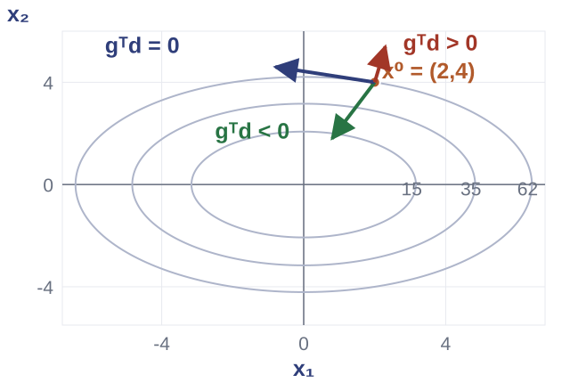
Ví dụ. $f=\tfrac12(3x_1^2+7x_2^2)$, $x^0=(2,4)^T$, $g=(6,28)^T$; với $d=(-1,0)^T$, $g^Td=-6<0$.
Định nghĩa. Với hướng $d\in\mathbb R^n$:
Tính chất. Khi $f$ khả vi tại $x^0$, $f'(x^0;d)=g^Td$ với $g=\nabla f(x^0)$, không phải $g(\lambda,\nu)$ của Bài giảng 03.
Bài con: $x$ là điểm hiện tại, cố định (bước đầu $x=x^0$); biến là $d\in\mathbb R^n$.
$\nabla^2Q_I=I\succ0$ nên $Q_I$ lồi chặt (còn gọi là lồi nghiêm ngặt); nghiệm $d_G$ duy nhất.
Cập nhật $x^+=x+td$ với hướng giảm $d$ và độ dài bước $t>0$.
VD1 với $d_G=(-6,-28)^T$, $g^Td_G=-820<0$:
nhỏ hơn $f(x^0)=62$ khi và chỉ khi $0<t<410/1399\approx0{,}29$.
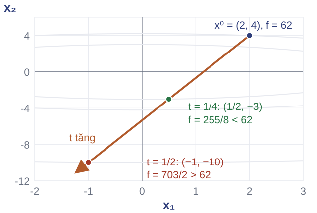
Điều kiện giảm đủ (Armijo), $0<\alpha<1/2$:
Mức giảm thật đạt ít nhất phần $\alpha$ của mức giảm dự báo tuyến tính $-t\,g^Td$.
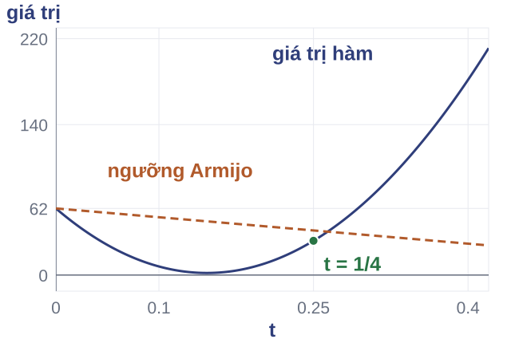
| Lần thử | $t$ | Điểm thử $x^0+td$ | $f(x^0+td)$ | Ngưỡng $62-82t$ | Kết luận |
|---|---|---|---|---|---|
| 1 | $1$ | $(-4,-24)^T$ | $2040$ | $-20$ | loại, co $t$ |
| 2 | $1/2$ | $(-1,-10)^T$ | $703/2$ | $21$ | loại, co $t$ |
| 3 | $1/4$ | $(1/2,-3)^T$ | $255/8$ | $83/2$ | nhận |
Nhận $t=1/4$: $x^1=(1/2,-3)^T$, $f(x^1)=255/8$; lượt sau tính lại gradient tại $x^1$.
Đầu vào: $x^0\in\operatorname{dom}f$ (miền mở), $\varepsilon_g>0$ và $\alpha,\beta$ của Armijo.
Đầu ra: điểm $x$ với $\|\nabla f(x)\|_2\le\varepsilon_g$.
Chi phí mỗi lượt: một gradient và các lần đánh giá hàm để thử bước.
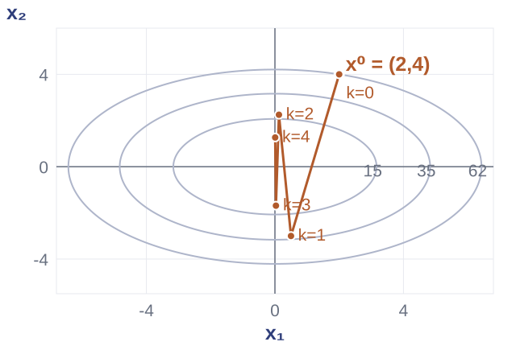
Giữ bước $t=1/4$ đã nhận ở lượt đầu; $d_G=-(3x_1,7x_2)^T$.
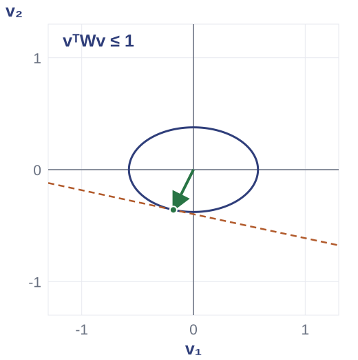
VD1, $W=\operatorname{diag}(3,7)$ theo độ cong: nghiệm là tiếp điểm của elip với đường mức $6v_1+28v_2=c$ thấp nhất.
Chuẩn có trọng số: $\|v\|_W=\sqrt{v^TWv}$, $W\succ0$.
Hướng giảm dốc nhất chuẩn hóa ($g\ne0$): $g^Tv$ nhỏ nhất trên các hướng có độ dài không quá 1.
Lagrange, nhân tử $\zeta\ge0$:
Bốn nhóm KKT của bài con:
Bước 1 (dừng): nếu $\zeta=0$ thì $g=0$, trái giả thiết $g\ne0$; vậy $\zeta>0$.
Bước 2 (bù trừ): $\zeta>0$ buộc $v^TWv=1$; ràng buộc hoạt động.
Bước 3 (giải): từ nhóm dừng, $v=-\tfrac{1}{2\zeta}W^{-1}g$; thay vào $v^TWv=1$:
Quy ước độ dài: nhân $v$ với chuẩn đối ngẫu
Với $W=I$: $d=-g$, đúng hướng gradient.
VD1: $W=\operatorname{diag}(3,7)$, $g=(6,28)^T$.
Câu hỏi: Tại $x^1=(1/2,-3)^T$ của VD1, với $W=\operatorname{diag}(3,7)$: viết điều kiện dừng của $Q_W$, giải $d$, rồi tính $x^1+d$ và $\|d\|_W^2$.
Câu hỏi: Quay lui trên VD1 từ $x^0$ theo $d_G$, với $\beta=1/2$ nhưng $\alpha=3/10$. Xác định bước được nhận.
VD1 bậc hai: $W=\nabla^2f$ cho nghiệm sau một bước. Hàm tổng quát: $W=H=\nabla^2f(x)$ tại điểm hiện tại.
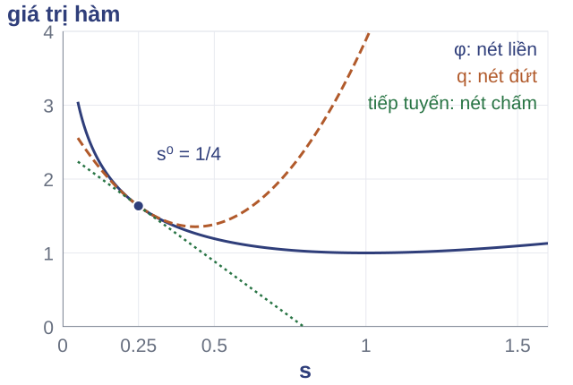
VD2 (không bậc hai, một biến): $\varphi(s)=s-\log s$, $s>0$; độ cong $\varphi''(s)=1/s^2$ đổi theo $s$; nghiệm $s^\star=1$.
Tại $s^0=1/4$: $g=\varphi'(s^0)=-3$, $H=\varphi''(s^0)=16$.
Với $g=\nabla f(x)\in\mathbb R^n$, $H=\nabla^2 f(x)\succ0$, dùng mô hình $Q_W$ với $W=H$:
VD2: $16d=3$, $d=3/16$; bước đầy đủ $t=1$ cho $s^+=1/4+3/16=7/16$.
$H\succ0$: nghiệm duy nhất.
$g^Td=-d^THd<0$ khi $g\ne0$: $d$ là hướng giảm.
Điều kiện dừng của bài gốc tại điểm mới:
Mô hình tuyến tính của vế trái:
VD2: $\varphi'(1/4+d)\approx-3+16d=0$, cùng $d=3/16$.
Mức giảm mô hình dự báo, dùng $Hd=-g$:
Định nghĩa. Độ giảm Newton (Newton decrement):
| VD2 | Giá trị |
|---|---|
| $\delta_N^2=d^THd$ | $9/16$ |
| Giảm mô hình $\delta_N^2/2$ | $9/32$ |
Ba phép trừ khác nhau trên cùng ví dụ $\varphi(s)=s-\log s$, $s^0=1/4$, $d=3/16$, $s^+=7/16$:
| Đại lượng | Hai giá trị được trừ | Kết quả |
|---|---|---|
| Giảm mô hình | $Q_H(0)-Q_H(d)$ | $9/32\approx0{,}28125$ |
| Giảm thật một bước | $\varphi(1/4)-\varphi(7/16)$ | $\log(7/4)-3/16\approx0{,}37212$ |
| Sai số tối ưu tại điểm đầu | $\varphi(1/4)-\varphi(1)$ | $\log4-3/4\approx0{,}63629$ |
Armijo, $\alpha=1/10$, $t=1$: ngưỡng giảm $\alpha(-g^Td)=9/160<0{,}37212$, nhận bước đầy đủ.
Đầu vào: $x^0\in\operatorname{dom}f$, $\varepsilon_{\mathrm{model}}>0$, $\alpha,\beta$.
Đầu ra: $x$ với $\delta_N^2/2\le\varepsilon_{\mathrm{model}}$.
Điều kiện: $f$ hai lần khả vi, $H\succ0$ tại điểm lặp.
Chi phí mỗi lượt: Hessian và hệ $n\times n$, cỡ $O(n^3)$ khi đặc.
Câu hỏi: Với VD2, thực hiện bước Newton đầy đủ thứ hai từ $s^1=7/16$: tính $g$, $H$, $d$, $s^2$ và $\delta_N^2/2$; so với sai số tối ưu $\varphi(s^1)-\varphi(1)$.
Câu hỏi: Chứng minh với VD2, bước Newton đầy đủ cho $1-s^+=(1-s)^2$. Nhận xét dãy khoảng cách tới nghiệm $1-s^k$, $k=0,1,2$, từ câu trên.
Hội tụ bậc hai: $|1-s^{k+1}|\le c\,|1-s^k|^2$. Vấn đề: điều kiện để $\delta_N^2$ cho cận sai số mục tiêu.
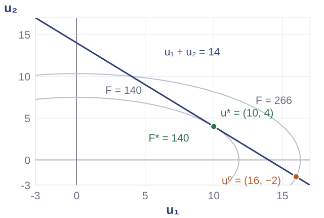
Bài toán: $\min_u F(u)$ với $Au=b$, $A\in\mathbb R^{p\times n}$.
VD3: $F=\tfrac12(2u_1^2+5u_2^2)$, $A=[1\ 1]$, $b=14$; điểm đầu khả thi $(16,-2)^T$.
Ứng viên: $u=(10,4)^T$, $\nu=-20$, $F^*=140$.
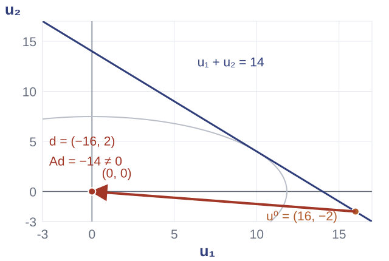
VD3 tại $u=(16,-2)^T$: $g=(32,-10)^T$, $H=\operatorname{diag}(2,5)$.
Bước Newton không ràng buộc $-H^{-1}g=(-16,2)^T$ có $Ad=-14$: điểm mới là gốc, vi phạm đẳng thức.
Giữ $Au=b$ với mọi bước $t$ khi và chỉ khi $Ad=0$.
Tại $u$ khả thi, $g=\nabla F(u)$, $H=\nabla^2F(u)$: mô hình $Q_H$ của phần Newton thêm ràng buộc $Ad=0$.
Bài con: $\min_d\ g^Td+\tfrac12d^THd$ với $Ad=0$; nhân tử $\eta\in\mathbb R^p$.
Dừng (đạo hàm theo $d$):
Khả thi (đạo hàm theo $\eta$):
Hàng 1, nhóm dừng:
Hàng 2, nhóm khả thi:
Hệ khối cỡ $(n+p)\times(n+p)$:
Với $H\succ0$ và $A$ đủ hạng hàng, ma trận khối khả nghịch: nghiệm $(d,\eta)$ duy nhất.
VD3 tại $(16,-2)^T$, $g=(32,-10)^T$, $H=\operatorname{diag}(2,5)$:
Thế $d_2=-d_1$ và trừ hai hàng:
Kiểm: $Ad=0$; bước $t=1$ tới $(10,4)^T$, $F$ giảm $266-140=126=\tfrac12d^THd$.
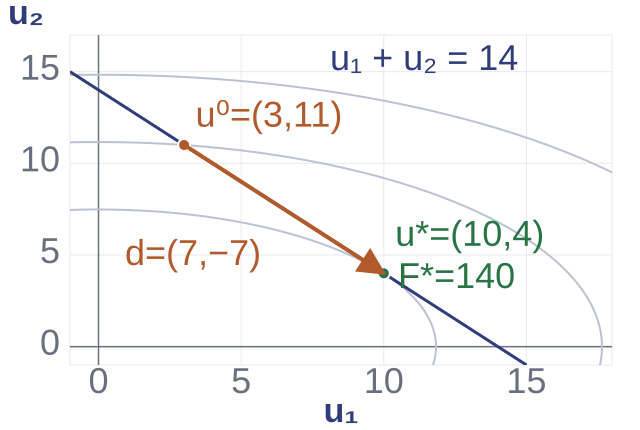
Hệ khối cỡ $n+p$ không xác định dương. Tham số hóa tập khả thi cho một hệ cỡ $n-p$ không chứa nhân tử.
Chọn $A\hat u=b$ và $N\in\mathbb R^{n\times(n-p)}$ có các cột là cơ sở $\ker A$. Khi đó $u=\hat u+Nz$ và $d=N\Delta z$.
Khử nhân tử: $N^TA^T=0$.
VD3: $N=(-1,1)^T$.
$N^THN=7$, $N^Tg=-42$.
Đầu vào: $u^0$ với $Au^0=b$, $\varepsilon_{\mathrm{model}}>0$, $\alpha,\beta$.
Đầu ra: $u$ khả thi với $\delta_{eq}^2/2\le\varepsilon_{\mathrm{model}}$.
Điều kiện: $H\succ0$, $A$ đủ hạng hàng.
Mỗi bước: giữ khả thi $A(u+td)=b$; hướng giảm $g^Td=-d^THd<0$.
Câu hỏi: Với VD3 tại điểm khả thi $u=(8,6)^T$: lập hệ khối của bài con, giải $d$ và $\eta$; kiểm $Ad=0$, tính $u+d$ và mức giảm của $F$.
Câu hỏi: Với $N=(-1,1)^T$, giải $N^THN\Delta z=-N^Tg$ và so với câu trên. Giải thích vì sao $\eta$ lại bằng $-20$.
Newton khả thi cần $Au^0=b$; tại điểm chưa khả thi, $Ad=0$ giữ nguyên sai lệch $Au-b$.
Định nghĩa. Với $u\in\operatorname{dom}F$, $\nu\in\mathbb R^p$:
$(u,\nu)$ thỏa KKT khi và chỉ khi $r_d=0$ và $r_p=0$.
VD3: $u=(1,8)^T$, $\nu=4$; $g=(2,40)^T$.
Như với $\nabla f(x+d)=0$ ở Newton không ràng buộc: tuyến tính hóa hai phần dư quanh $(u,\nu)$ theo số gia $d\in\mathbb R^n$, $\Delta\nu\in\mathbb R^p$; $H=\nabla^2F(u)$.
Xấp xỉ bậc một ($\nabla F$ phi tuyến; $r_d$ tuyến tính theo $\nu$):
$r_d(u+d,\nu+\Delta\nu)\approx r_d+Hd+A^T\Delta\nu$
Đúng (ràng buộc affine):
$r_p(u+d)=r_p+Ad$
Đặt hai biểu thức mô hình bằng 0:
$r_d+Hd+A^T\Delta\nu=0,\qquad r_p+Ad=0.$
$\begin{bmatrix}H&A^T\\A&0\end{bmatrix}\begin{bmatrix}d\\\Delta\nu\end{bmatrix}=-\begin{bmatrix}r_d\\r_p\end{bmatrix}.$
| Đối chiếu | Điểm khả thi | Điểm chưa khả thi |
|---|---|---|
| Ẩn thứ hai | nhân tử $\eta$ | số gia $\Delta\nu$ |
| Vế phải | $-[g;0]$ | $-[r_d;r_p]$ |
| Giả thiết | $H\succ0$, $A$ đủ hạng hàng | giữ nguyên |
Thay $r_d=g+A^T\nu$ vào hàng 1: $g+Hd+A^T(\nu+\Delta\nu)=0$.
Tại $u=(1,8)^T$, $\nu=4$: $r_d=(6,44)^T$, $r_p=-5$ cho vế phải $-6$, $-44$, $5$.
Trừ hai hàng đầu: $2d_1-5d_2=38$.
Thế $d_2=5-d_1$: $7d_1=63$.
Bước đầy đủ:
$u^+=(1,8)^T+d=(10,4)^T$.
$\nu^+=4-24=-20$.
Kiểm: $r_p^+=10+4-14=0$;
$r_d^+=(20,20)^T-20\,(1,1)^T=0$.
Trường hợp mục tiêu phải tăng: $u=(0,0)^T$, $\nu=0$.
$F=0<140=F^*$ nhưng $r_p=-14$.
Đến nghiệm khả thi đòi hỏi $F$ tăng.
Gộp $r=[r_d;r_p]\ne0$, $\Delta=[d;\Delta\nu]$.
Hệ Newton viết gọn $J_r\Delta=-r$; $J_r$ là ma trận khối của hệ, tức ma trận Jacobi của $r$.
Đầu vào: $u^0\in\operatorname{dom}F$, $\nu^0$, $\varepsilon_p,\varepsilon_d>0$, $\alpha,\beta$.
Đầu ra: $(u,\nu)$ đạt hai dung sai.
Điều kiện (đủ): $H\succ0$, $A$ đủ hạng hàng.
Sau bước $t$: $r_p^+=(1-t)r_p$; bước $t=1$ cho $Au^+=b$.
Câu hỏi: Với $u=(1,8)^T$, $\nu=4$, giải thích vì sao vế phải tọa độ hai của hàng gradient là $-44$ và vế phải hàng ràng buộc là $5$. $\eta=-20$ có phải là $\Delta\nu$ không? Nêu hai điều kiện phải kiểm để dừng.
Lỗi cần sửa: lấy vế phải tọa độ hai là $-40$ (bỏ $A^T\nu$).
Lỗi cần sửa: lấy vế phải hàng ràng buộc là $-5$ thay vì $5$.
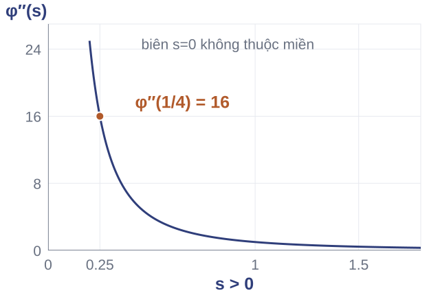
Ký hiệu $\delta=\delta_N=\sqrt{d^THd}\ge0$.
Với VD2: $\delta_N^2=9/16$, nên $\delta=3/4$.
Với $\varphi(s)=s-\log s$: $\varphi''=1/s^2$ không bị chặn trên toàn miền $s>0$.
Cần kiểm biến thiên độ cong tương đối để có một cận sai số.
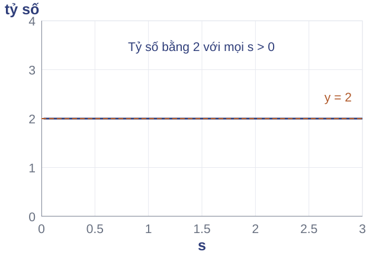
Với $\varphi(s)=s-\log s$: $\varphi''=1/s^2$, $|\varphi'''|=2/s^3$, nên $|\varphi^{\prime\prime\prime}|/(\varphi^{\prime\prime})^{3/2}=2$ trên toàn miền.
Kiểm tại $s=1/4$: $128=2\cdot16^{3/2}$.
Định nghĩa. Hàm lồi $C^3$ trên miền mở lồi là tự điều chỉnh khi mọi hàm $h(t)=f(x+tv)$ trên miền tương ứng thỏa $|h'''|\le2(h'')^{3/2}$.
Giả thiết: hàm tự điều chỉnh, lồi chặt, $H\succ0$, đạt cực tiểu trong miền.
VD2 tại $s=1/4$: $\delta=3/4$.
$\approx0{,}63629$; đúng bằng sai số ở ví dụ này.
Độ giảm mô hình nhỏ hơn sai số mục tiêu trong ví dụ này.
Nếu $F$ tự điều chỉnh thì $\psi(z)=F(\hat u+Nz)$ cũng tự điều chỉnh trên miền tiền ảnh của phép khử đẳng thức.
Điều kiện dùng cận cho hàm rút gọn: $\psi$ lồi chặt, Hessian xác định dương, đạt cực tiểu trong miền, và độ giảm Newton của $\psi$ nhỏ hơn $1$.
Bảo toàn lớp hàm qua hợp thành affine khác tính bất biến của Newton dưới phép đổi tọa độ affine khả nghịch.
Câu hỏi: Hai hàm có cùng đạo hàm bậc hai và ba. Hàm nào đạt cực tiểu hữu hạn?
Câu hỏi: Tại $s=1/4$ của hàm thứ hai:
| Phương pháp | Bài con / điều kiện chọn | Hệ giải | Nhận bước |
|---|---|---|---|
| Gradient | Cực tiểu $Q_I$ | $g+d=0$ | Armijo trên $f$ |
| Chuẩn $W$ | Chuẩn đơn vị, đổi độ dài | $Wd=-g$ | Armijo trên $f$ |
| Newton | Cực tiểu $Q_H$ | $Hd=-g$ | Armijo trên $f$ |
| Newton khả thi | Cực tiểu $Q_H$, $Ad=0$ | KKT theo $d,\eta$ | Armijo trên $F$ |
| Newton phần dư | Tuyến tính hóa KKT gốc | Hệ theo $d,\Delta\nu$ | Chuẩn $\|r\|_2$ |
Bình phương tối thiểu: giải $\min_{w:Aw=b}J(w)$ với $\rho>0$.
$w\in\mathbb R^n$, $M\in\mathbb R^{m\times n}$, $y\in\mathbb R^m$.
$A\in\mathbb R^{p\times n}$ đủ hạng hàng; $b,\nu\in\mathbb R^p$.
| Nhiệm vụ | Sản phẩm cần có |
|---|---|
| Suy ra hướng từ bài con | Lagrange hoặc điều kiện dừng; giả thiết; hướng giải được. |
| Tái tạo một lượt quay lui | Bảng điểm thử, giá trị thật, ngưỡng và bước nhận đầu tiên. |
| Suy ra hai hệ Newton đẳng thức | Hai hàng phương trình; ẩn và vế phải; phép giải số rồi kiểm lại. |
Tài liệu đọc: Boyd và Vandenberghe, Convex Optimization (2004), §5.5.3, §§9.2–9.6, 10.1–10.3.
MIT 6.079, mùa thu 2009: bài giảng 16, sau đó bài giảng 17.